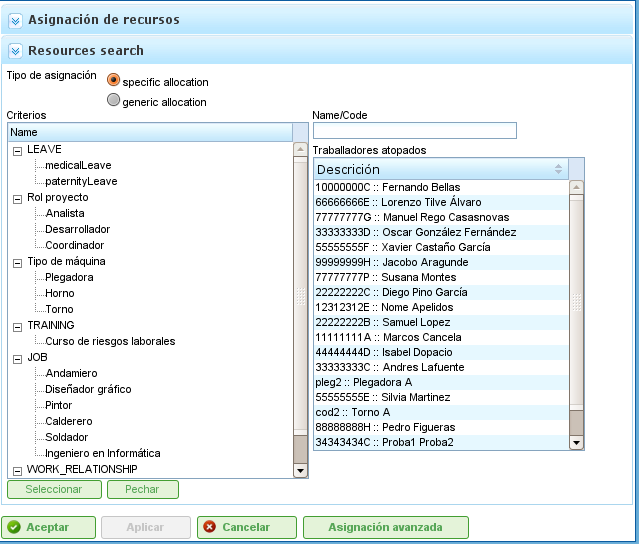

Assignació de Recursos
Contents
L'assignació de recursos és una de les funcionalitats més importants del programa i es pot dur a terme de dues maneres diferents:
- Assignació específica
- Assignació genèrica
Tots dos tipus d'assignació s'expliquen a les seccions següents.
Per realitzar qualsevol dels dos tipus d'assignació de recursos, cal seguir els passos següents:
- Aneu a la vista de planificació d'un projecte.
- Feu clic amb el botó dret sobre la tasca que s'ha de planificar.

Menú d'Assignació de Recursos
- El programa mostra una pantalla amb la informació següent:
- Llista de Criteris a Complir: Per a cada grup d'hores, es mostra una llista de criteris requerits.
- Informació de la Tasca: Les dates d'inici i fi de la tasca.
- Tipus de Càlcul: El sistema permet a l'usuari triar l'estratègia per calcular les assignacions:
- Calcular el Nombre d'Hores: Calcula el nombre d'hores necessàries dels recursos assignats, donada una data de fi i un nombre de recursos per dia.
- Calcular la Data de Fi: Calcula la data de fi de la tasca en funció del nombre de recursos assignats a la tasca i el nombre total d'hores necessàries per completar-la.
- Calcular el Nombre de Recursos: Calcula el nombre de recursos necessaris per acabar la tasca en una data concreta, donat un nombre conegut d'hores per recurs.
- Assignació Recomanada: Aquesta opció permet al programa recollir els criteris a complir i el nombre total d'hores de tots els grups d'hores, i recomanar una assignació genèrica. Si existeix una assignació prèvia, el sistema l'elimina i la substitueix per la nova.
- Assignacions: Una llista de les assignacions realitzades. Aquesta llista mostra les assignacions genèriques (el nombre serà la llista de criteris complerts, i el nombre d'hores i recursos per dia). Cada assignació es pot eliminar explícitament fent clic al botó d'eliminació.

Assignació de Recursos
- Els usuaris seleccionen "Cercar recursos."
- El programa mostra una nova pantalla consistent en un arbre de criteris i una llista de treballadors que compleixen els criteris seleccionats a la dreta:

Cerca d'Assignació de Recursos
- Els usuaris poden seleccionar:
- Assignació Específica: Vegeu la secció "Assignació Específica" per obtenir detalls sobre aquesta opció.
- Assignació Genèrica: Vegeu la secció "Assignació Genèrica" per obtenir detalls sobre aquesta opció.
- Els usuaris seleccionen una llista de criteris (genèric) o una llista de treballadors (específic). Es poden fer seleccions múltiples prement la tecla "Ctrl" mentre es fa clic a cada treballador/criteri.
- Els usuaris fan clic al botó "Seleccionar". És important recordar que si no s'ha seleccionat una assignació genèrica, els usuaris han de triar un treballador o una màquina per realitzar l'assignació. Si s'ha seleccionat una assignació genèrica, n'hi ha prou que els usuaris triïn un o més criteris.
- El programa mostra aleshores els criteris o la llista de recursos seleccionats a la llista d'assignacions de la pantalla original d'assignació de recursos.
- Els usuaris han de triar les hores o els recursos per dia, depenent del mètode d'assignació utilitzat al programa.
Assignació Específica
Aquesta és l'assignació específica d'un recurs a una tasca del projecte. En altres paraules, l'usuari decideix quin treballador concret (pel nom i cognom) o màquina s'ha d'assignar a una tasca.
L'assignació específica es pot dur a terme des de la pantalla que es mostra en aquesta imatge:

Assignació Específica de Recursos
Quan un recurs s'assigna específicament, el programa crea assignacions diàries en funció del percentatge de recursos diaris assignats seleccionat, després de comparar-lo amb el calendari del recurs disponible. Per exemple, una assignació de 0,5 recursos per a una tasca de 32 hores significa que s'assignen 4 hores per dia al recurs específic per completar la tasca (assumint un calendari laboral de 8 hores per dia).
Assignació Específica de Màquines
L'assignació específica de màquines funciona de la mateixa manera que l'assignació de treballadors. Quan s'assigna una màquina a una tasca, el sistema emmagatzema una assignació específica d'hores per a la màquina triada. La diferència principal és que el sistema cerca la llista de treballadors o criteris assignats en el moment en què s'assigna la màquina:
- Si la màquina té una llista de treballadors assignats, el programa tria entre els que requereix la màquina, en funció del calendari assignat. Per exemple, si el calendari de la màquina és de 16 hores per dia i el calendari del recurs és de 8 hores, s'assignen dos recursos de la llista de recursos disponibles.
- Si la màquina té un o més criteris assignats, es fan assignacions genèriques d'entre els recursos que compleixen els criteris assignats a la màquina.
Assignació Genèrica
L'assignació genèrica es produeix quan els usuaris no trien recursos específicament, sinó que deixen la decisió al programa, que distribueix les càrregues entre els recursos disponibles de l'empresa.

Assignació Genèrica de Recursos
El sistema d'assignació utilitza els supòsits següents com a base:
- Les tasques tenen criteris que es requereixen dels recursos.
- Els recursos estan configurats per complir criteris.
No obstant això, el sistema no falla quan no s'han assignat criteris, sinó quan tots els recursos compleixen el no-requisit de criteris.
L'algoritme d'assignació genèrica funciona de la manera següent:
- Tots els recursos i dies es tracten com a contenidors on encaixen les assignacions diàries d'hores, en funció de la capacitat d'assignació màxima del calendari de la tasca.
- El sistema cerca els recursos que compleixen el criteri.
- El sistema analitza quines assignacions tenen en aquest moment recursos que compleixen criteris.
- Els recursos que compleixen els criteris es trien dels que tenen disponibilitat suficient.
- Si no hi ha recursos més lliures disponibles, es fan assignacions als recursos que tenen menys disponibilitat.
- La sobreassignació de recursos només comença quan tots els recursos que compleixen els criteris respectius estan assignats al 100%, fins que s'assoleix la quantitat total necessària per dur a terme la tasca.
Assignació Genèrica de Màquines
L'assignació genèrica de màquines funciona de la mateixa manera que l'assignació de treballadors. Per exemple, quan s'assigna una màquina a una tasca, el sistema emmagatzema una assignació genèrica d'hores per a totes les màquines que compleixen els criteris, tal com es descriu per als recursos en general. No obstant això, a més, el sistema realitza el procediment següent per a les màquines:
- Per a totes les màquines triades per a l'assignació genèrica:
- Recull la informació de configuració de la màquina: valor alfa, treballadors assignats i criteris.
- Si la màquina té una llista de treballadors assignats, el programa tria el nombre requerit per la màquina, depenent del calendari assignat. Per exemple, si el calendari de la màquina és de 16 hores per dia i el calendari del recurs és de 8 hores, el programa assigna dos recursos de la llista de recursos disponibles.
- Si la màquina té un o més criteris assignats, el programa fa assignacions genèriques d'entre els recursos que compleixen els criteris assignats a la màquina.
Assignació Avançada
Les assignacions avançades permeten als usuaris dissenyar assignacions que l'aplicació realitza automàticament per personalitzar-les. Aquest procediment permet als usuaris triar manualment les hores diàries que els recursos dediquen a les tasques assignades o definir una funció que s'aplica a l'assignació.
Els passos a seguir per gestionar les assignacions avançades són:
- Aneu a la finestra d'assignació avançada. Hi ha dues maneres d'accedir a les assignacions avançades:
- Aneu a un projecte específic i canvieu la vista a assignació avançada. En aquest cas, es mostraran totes les tasques del projecte i els recursos assignats (específics i genèrics).
- Aneu a la finestra d'assignació de recursos fent clic al botó "Assignació avançada". En aquest cas, es mostraran les assignacions que mostren els recursos (genèrics i específics) assignats a una tasca.

Assignació Avançada de Recursos
- Els usuaris poden triar el nivell de zoom desitjat:
- Nivells de Zoom Superiors a Un Dia: Si els usuaris canvien el valor de les hores assignades a un període setmanal, mensual, quadrimestral o semestral, el sistema distribueix les hores linealment per tots els dies del període triat.
- Zoom Diari: Si els usuaris canvien el valor de les hores assignades a un dia, aquestes hores s'apliquen només a aquell dia. En conseqüència, els usuaris poden decidir quantes hores volen assignar per dia als recursos de la tasca.
- Els usuaris poden triar dissenyar una funció d'assignació avançada. Per fer-ho, els usuaris han de:
- Triar la funció de la llista de selecció que apareix al costat de cada recurs i fer clic a "Configurar."
- El sistema mostra una nova finestra si la funció triada necessita ser configurada específicament. Funcions admeses:
- Segments: Una funció que permet als usuaris definir segments als quals s'aplica una funció polinomial. La funció per segment es configura de la manera següent:
- Data: La data en la qual acaba el segment. Si s'estableix el valor següent (longitud), la data es calcula; alternativament, es calcula la longitud.
- Definició de la Longitud de Cada Segment: Indica quin percentatge de la durada de la tasca és necessari per al segment.
- Definició de la Quantitat de Treball: Indica quin percentatge de càrrega de treball s'espera que s'hagi completat en aquest segment. La quantitat de treball ha de ser incremental. Per exemple, si hi ha un segment del 10%, el següent ha de ser més gran (per exemple, el 20%).
- Gràfics de Segments i Càrregues Acumulades.
- Segments: Una funció que permet als usuaris definir segments als quals s'aplica una funció polinomial. La funció per segment es configura de la manera següent:
- Els usuaris fan clic a "Acceptar."
- El programa emmagatzema la funció i l'aplica a les assignacions diàries de recursos.

Configuració de la Funció de Segments